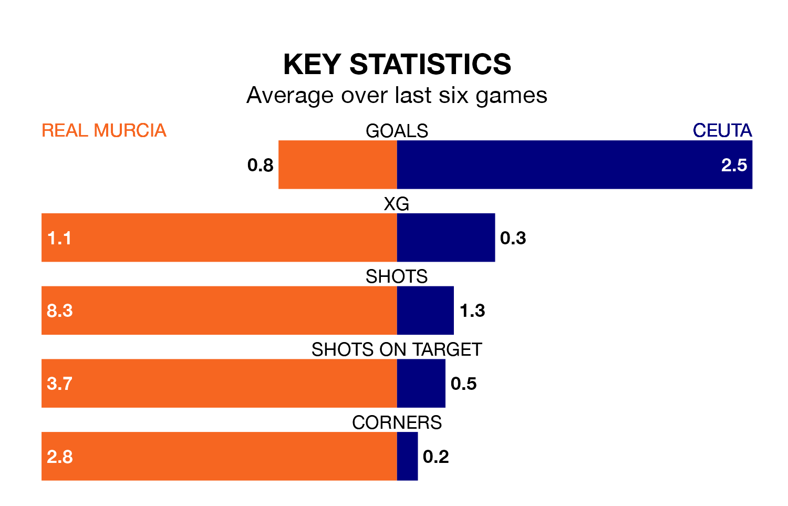

Real Murcia and Ceuta both come into Sunday's kick-off at the Estadio Nueva Condomina in great form, having picked up 14 and 16 points respectively in their last six games.
Murcia have won four and drawn two of the last six, while Ceuta have taken five wins and one draw.
With 46 goals in 33 games so far this season, Ceuta are scoring more than average in the league with 1.4 goals per game. And they are conceding fewer than average, letting in 33 goals at a rate of 1.0 per game.
Murcia, meanwhile, are below average scorers, with 0.9 goals per game, compared to a league average of 1.1. They have also conceded 0.9 goals per game.
With Manuel García Humanes between the sticks, the home side can rely on one of the league's safest pair of hands. He has kept 10 clean sheets in his 19 appearances this season, and only one other 'keeper – Recreativo de Huelva's Rubén Ramos González – has been able to prevent the opposition scoring on more occasions in Primera Division RFEF Group 2.
In the visitors' net, Pedro López Galisteo has nine clean sheets in 23 games.
Ceuta are fifth in the table after 33 games, of which they have won 15 and drawn 11, earning 56 points.
Murcia are two places behind Ceuta in seventh, with 14 wins and nine draws putting them on 51 points.
Murcia's last match was on April 21, a 0-0 draw against Málaga CF.
Ceuta beat CD Atlético Baleares 2-1 last time out, also on April 21, with Cedric Wilfried Teguia Noubi and Emmanuel González Rodríguez on the scoresheet.
Updated: 07:59 (UTC), 26/04/24